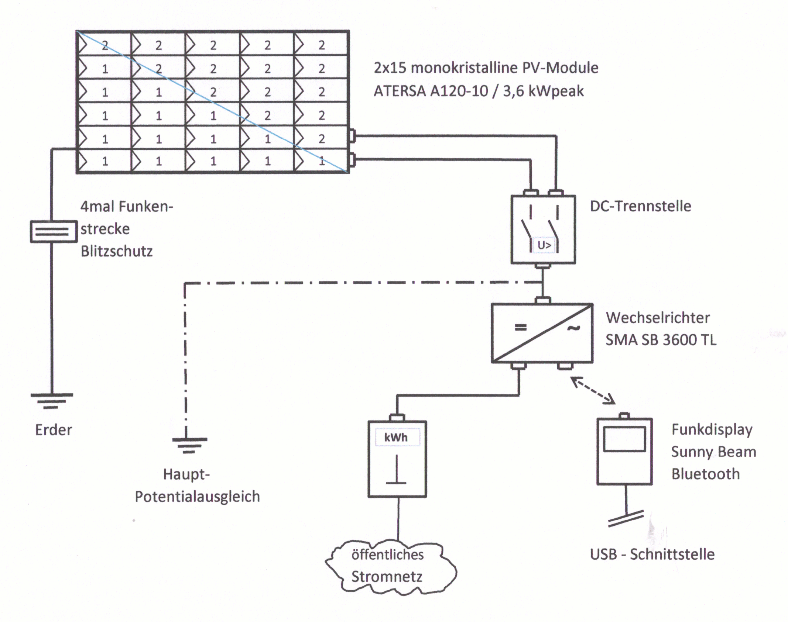

Schönes Dorf Mindersbach
Schönes Dorf MindersbachAnlagendaten
Technische Angaben aus dem Vereinsarchiv.
|
 Klicken Sie doch einmal auf den Schaltplan! |
Modulfläche: 7,50 x 4,10 m |
Die Dachneigung beträgt ca.: 53° zur Horizontalen |
Die Dachfläche ist ca. 18° von der idealen |
Technische Angaben aus dem Vereinsarchiv.
|
 Klicken Sie doch einmal auf den Schaltplan! |
Modulfläche: 7,50 x 4,10 m |
Die Dachneigung beträgt ca.: 53° zur Horizontalen |
Die Dachfläche ist ca. 18° von der idealen |